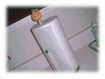
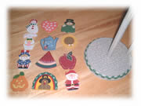
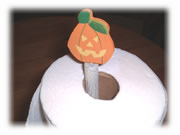

| ..*..*.. 2002年11月2日(土) 晴れ ..*..*.. 前から注文していたキッチンペーパーのスタンドが来ました。写真のカタログで注文したので、思っていたより安っぽかったんだけど、とりあえず満足です。 何に惹かれたかというと、上のところにつく木でできた柄が、12個、12か月分あって、月ごとに好感できるのです。 去年のハロウィンでは、ハロウィン用のキッチンペーパーを買ってきて使ってたのだけど、オレンジと黒のインクのシミが、水にぬれると解けちゃって、使うとオレンジや黒くなって、キッチンペーパーの役割をいまいちしなかったのです。 それで、今年は使う気がしなくて買いませんでした。普段、真っ白いキッチンペーパーを使うので、このキッチンペーパースタンドをカタログで見たときは「これだ！」と思ったんですけどね。 値段のわりには今にも壊れそうで、1年間使う前に壊れるんじゃないかという気がします。ちなみに、10月はこういうハロウィンのかぼちゃでした。 右上の写真、左から1月2月3月の順で並べてみました。よくわからないのもあったけど、たぶんこの順番でいいと思います。今月末は感謝祭があるので、ターキーです。さて、何月まで使えるか？！ |